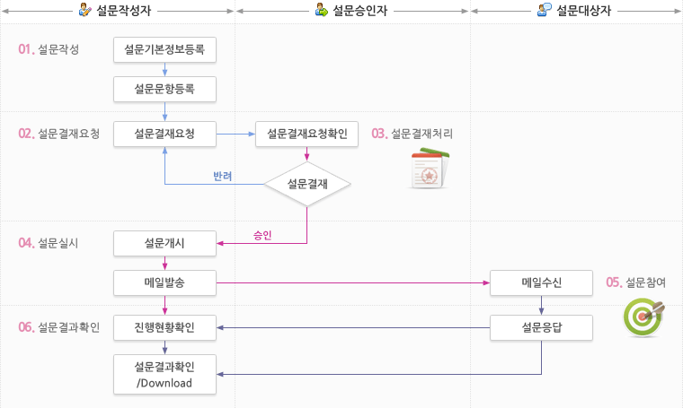

컨텐츠영역
설문 Process

- 1. 설문작성자
- 1-1) 설문작성
- 1-1-1) 설문기본정보등록
- 1-1-2) 설문문항등록
- 1-2) 설문승인자에게 설문결재요청
- 1-2-1) 설문결재반려일 경우 설문결재 재요청
- 1-2-2) 설문결재승인일 경우 설문실시
- 1-4) 설문실시
- 1-4-1) 설문개시
- 1-4-2) 메일발송
- 1-5) 설문결과확인/Download
- 1-1) 설문작성
- 2. 설문승인자
- 2-1) 설문결재요청확인 - 설문반려, 승인여부 결정
- 3. 설문대상자
- 3-1) 메일 수신
- 3-2) 설문 응답